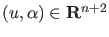
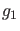
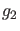
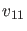
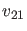
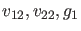
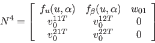
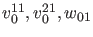
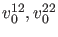
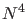

In the toolbox branch point curves are computed by minimally extended defining systems,
cf. [22], §4.1.2.
The branch point curve is defined by the following system
where
, while  and  are obtained by solving
Here  and  are functions and
 and are scalars and

where the bordering functions
 and scalars
 are chosen so that  is nonsingular. This method is implemented in the curve definition file branchpoint.m.